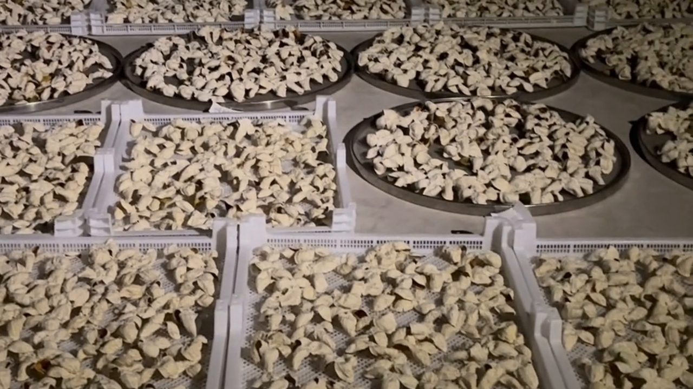
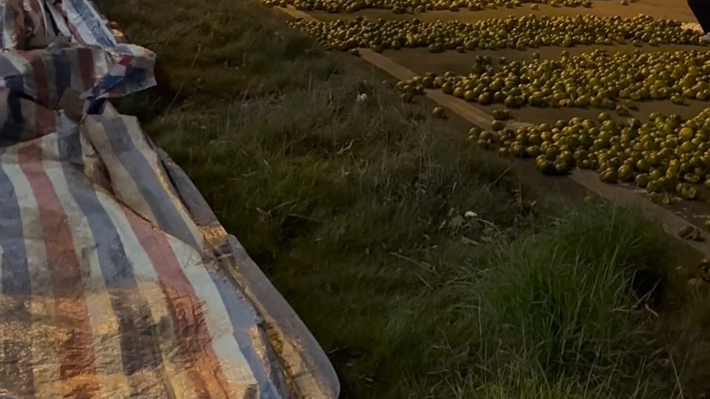
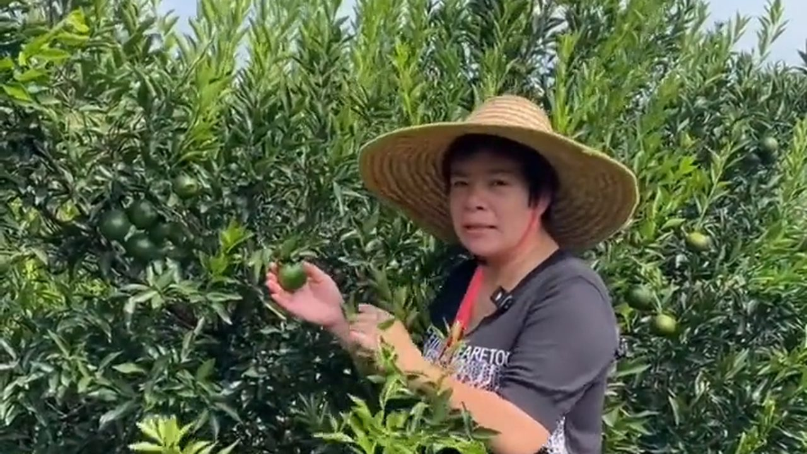
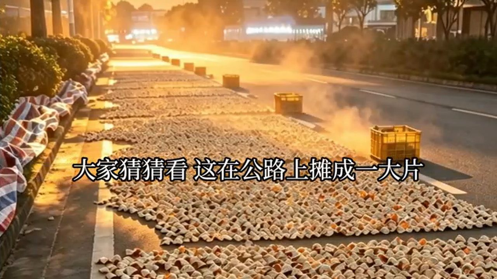
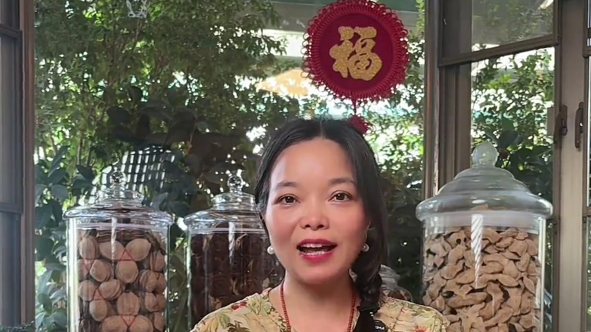
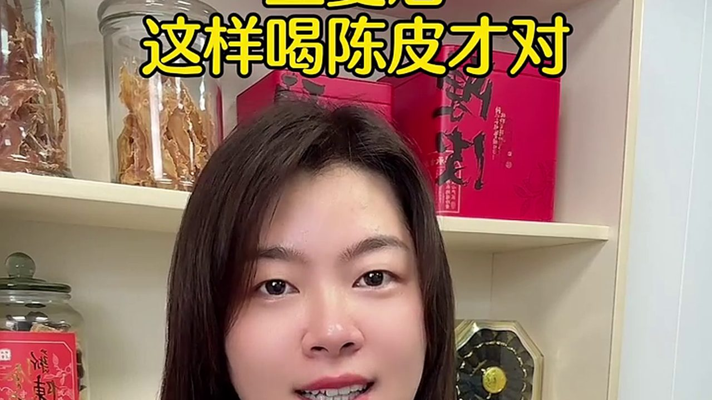
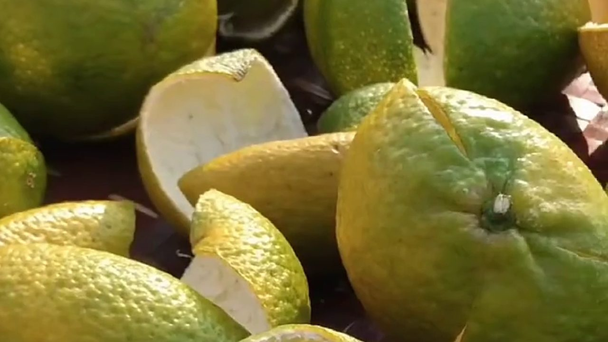

00:26屋頂曬場的夜：整片柑皮鋪在曬架上
📅 2026-10-05
整片柑皮鋪在離地的曬架上，背後是城市的夜。離地、通風、不沾地氣，這是新會生曬最基本的講究。
 00:43
00:43
棚架曬房裡，拿起一片陳皮看什麼
📅 2026-10-05
棚架曬房裡，金屬架上排滿圓篩，攤着正在陳化的陳皮。拿在手上看乾度、油室與韌性，是最直接的判斷。

00:22夜裡十點，路邊還在翻皮：新會曬皮現場
📅 2026-10-05
柑皮鋪滿整條路邊，工人一片片翻。為什麼要連夜翻？皮一沾地氣、吸了濕氣就容易變壞——這就是新會人所說的「睇天食飯」。

00:59新會柑園裡講青皮：頭採的青皮，茶客為什麼要自己存？
📅 2026-10-05
果農在新會柑園裡說：這幾年很多茶客都在自己存新皮。青皮是還沒轉紅的柑皮，氣味比大紅皮更烈，青柑茶、小青柑用的就是它——跟大紅皮走的是兩條路。

00:15公路邊攤開一大片：新會陳皮的秋日曬場
📅 2026-10-05
在廣東某些地方，秋天會看到這樣的景象：整條公路邊攤滿柑皮，從早曬到晚。猜猜看，這一大片是什麼好東西？

01:25新會陳皮不只泡水：煮、燉、蒸魚、燜羊肉牛肉都放得
📅 2026-10-05
一兩陳皮一兩金。除了單獨煮、單獨泡，陳皮還能入膳——蒸魚放一片去腥提鮮，燜羊肉、燜牛肉加一點更香，怕冷的人尤其適合。

00:44陳皮配山藥乾同蓮子，用壺煲足 40 分鐘
📅 2026-10-04
家裡有陳皮卻不知道怎麼喝？陳皮、山藥乾、蓮子落壺，煲足 40 分鐘，湯色金黃透亮。
 01:54
01:54
干蒸陳皮瘦肉湯：不加一滴油，隔水蒸出鮮甜
📅 2026-10-04
陳皮先洗淨切絲，瘦肉不加一滴油，隔水干蒸；蒸出來的水回淋成湯，清而不寡。

01:51自家曬陳皮：選果、清洗、三刀法開皮到晾軟
📅 2026-10-04
沒有三蒸三曬，全靠太陽。從選果、清洗、三刀法開皮，到第三步把果皮晾軟——自己在家做陳皮的全過程。
 02:35
02:35
凌晨5點的天馬村，老果農已經開始摘柑了
📅 2026-09-04
你還沒起牀的時候，他們已經踩着露水進了果園。這就是為什么正宗陳皮越來越貴——人工成本擺在這裏。
 01:48
01:48
十年陳皮怎麼泡？滢滢手把手教你
📅 2026-09-04
很多人把好陳皮泡壞了。今天滢滢現場泡一泡，你看湯色、聞香氣，就知道什麼叫真正的老陳皮。
 03:12
03:12
這種"黑皮"千萬不要買！滢滢實拍濕倉做舊現場
📅 2026-09-04
你去直播間看到的"十年陳皮"可能就是這樣做出來的。滢滢帶你進倉庫，看看什麼叫真正的幹倉陳化。
 00:45
00:45
北京大姐收到陳皮後的真實反應
📅 2026-09-04
她説在網上買了三次假的，第四次終於找對了人。打開包裝那一刻，她説"這個香氣對了"。
 04:18
04:18
從摘柑到開皮，一片陳皮要經歷多少道工序？
📅 2026-09-04
滢滢跟拍了一整天，從凌晨摘柑到下午翻曬。看完你就知道，為什麼好陳皮不便宜。
 02:05
02:05
天馬、梅江、茶坑陳皮，放在一起你分得清嗎？
📅 2026-09-04
滢滢把三款陳皮擺在一起，從顏色、香氣、口感一個個對比。看完你就知道該買哪種了。
🎥 想看更多滢滢的日常？
關注滢滢的短視頻賬號，每天更新陳皮相關視頻：